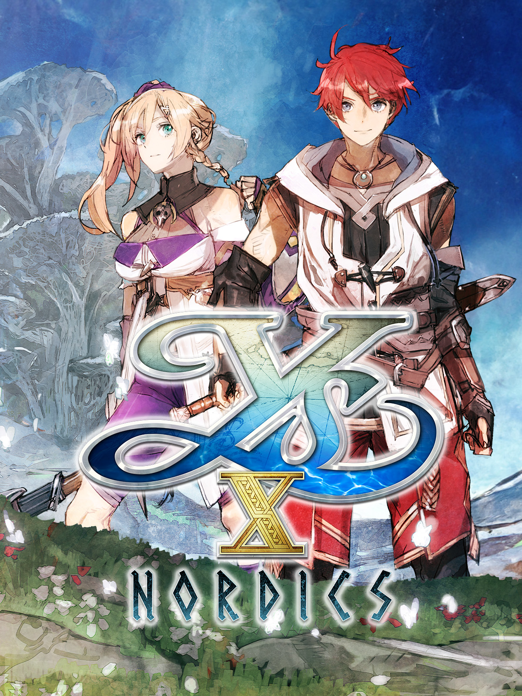

＜—Back
Ys X: Nordics
Action RPG
Company: NIS America
Official Site

This journey takes place in the northern islands collectively known as Obelia Gulf. In this harsh land, the young adventurer Adol Christin encounters the Normans, a seafaring people, and is quickly drawn into the conflict between them, the residents of Obelia Gulf, and the Griegr, undying monsters with a mysterious agenda. Partnering up with the Norman warrior Karja, Adol must take to the waters of Obelia Gulf, navigating vast stretches of ocean, consulting maritime maps, and even getting into naval battles with enemy ships. This latest title in the Ys series takes us back to a younger Adol as he sets out on the open sea. Join him in his pursuit of the thrill of adventure!